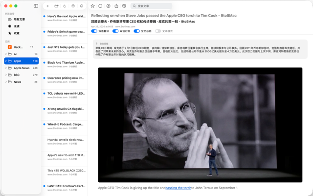

NuFeed
A focused RSS and web subscription reader for iPhone, iPad, and Mac.
Read feeds, follow sites without RSS, extract full articles, translate bilingual content, summarize long reads, and keep your progress in sync with iCloud.

Everything you need to read the web with less noise.
RSS subscriptions
Folders, unread state, favorites, and a calm daily queue.
Web subscriptions
Follow useful sites even when they do not publish RSS feeds.
Full articles
Extract complete stories from sources that only publish snippets.
AI translation
Use your own API configuration for bilingual reads and summaries.
iCloud sync
Subscriptions, reading progress, and favorites stay with you.